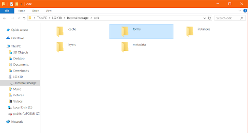

2.5 Aperçu sur la collecte de données à l'aide de ODK
Objectifs du cours
Cette section présente une vue d’ensemble de ODK Collect. À la fin de cette section, vous devriez être apte à :
- Comprendre la structure générale de la collecte de données à l’aide de ODK
Activités d’apprentissage
OpenDataKit (ODK) est un ensemble d’outils gratuits et open-source qui aident les organisations à créer, mettre en œuvre et gérer des solutions de collecte de données mobiles. ODK Collect fait partie de ODK et est une application Android qui remplace les formulaires papier utilisés dans les enquêtes de collecte de données. Elle prend en charge un large éventail de types de questions et de réponses et est conçue pour fonctionner sans connectivité réseau.
Vous ne savez pas si OpenDataKit est adapté à votre projet ? Réviser Les applications de collecte de données.
Processus de configuration
Pour configurer OpenDataKit pour les appareils, vous devez suivre les étapes suivantes :
Création des formulaires ODK
Lorsque vous utilisez les applications d’enquête ODK, vous devez créer les fichiers qui serviront de formulaires d’enquête.
Les formulaires peuvent être créés à l’aide d’un tableur (tels que Excel ou LibreCalc) ou en utilisant le générateur de formulaire ODK. La documentation sur la conception d’un formulaire est disponible ici.
Conversion des formulaires
Une fois les formulaires développés, ils doivent être convertis en .xlsx/.xls en .xml pour être utilisés par l’application ODK. Celà peut se faire en utilisant XLSform en ligne ou hors ligne. Si vous utilisez le serveur OpenMapKit ou le serveur KoboToolBox, vous n’aurez pas besoin de procéder à la conversion du formulaire. Le serveur se chargera de cette opération pour vous.
Télécharger et configurer l’application ODK
Télécharger l’application
L’application ODK est disponible sur Google Play ici.
En cas d’installation sur plusieurs appareils avec de faibles ressources Internet, il est recommandé de télécharger et de partager l’apk hors ligne. Le fichier APK pour OpenMapKit peut être téléchargé ici.
De plus amples informations sur l’utilisation de ODK Collect sont disponibles ici.
Configuration de l’application sur les appareils
- Trouvez l’icône de l’application ODK Collect sur votre appareil mobile et appuyez dessus pour ouvrir l’application.
- Après avoir téléchargé l’application ODK, un dossier ODK sera automatiquement créé dans la mémoire interne de l’appareil. Connectez votre appareil à un ordinateur portable pour confirmer la création de ce dossier. Si vous ne voyez pas ce dossier dans la mémoire interne de votre appareil, redémarrez l’appareil.
- Une fois l’appareil redémarré, connectez-le à votre ordinateur portable et naviguez jusqu’au stockage interne -> dossier odk. Vous trouverez quatre sous-dossiers dans le dossier openmapkit. Il s’agit des dossiers ‘forms’, ‘instances’, ‘layers’ et ‘metadata’.

- Ajoutez vos formulaires xml au dossier forms.
- Dans la fenêtre du menu principal de ODK Collect, sélectionnez Fill Blank Form. Cela permet d’afficher tous les formulaires téléchargés depuis le serveur, que vous utiliserez pour les tests de collecte de données sur le terrain.
- Une fois que vous avez confirmé que vous avez tous les formulaires sur votre appareil, cliquez sur le bouton de retour de l’appareil pour quitter l’application ODK Collect.
[Quiz] Testez vos connaissances
-
OpenDataKit (ODK) est un ensemble d’outils gratuits et open-source qui aident les organisations à créer, mettre en place et gérer des solutions de collecte de données mobiles.
a. Vrai
b. Faux
Answer: 1. A
Liste de contrôle des activités
À la fin de cette section, vous devriez être en mesure de :
- Comprendre le processus de collecte de données à l’aide de ODK